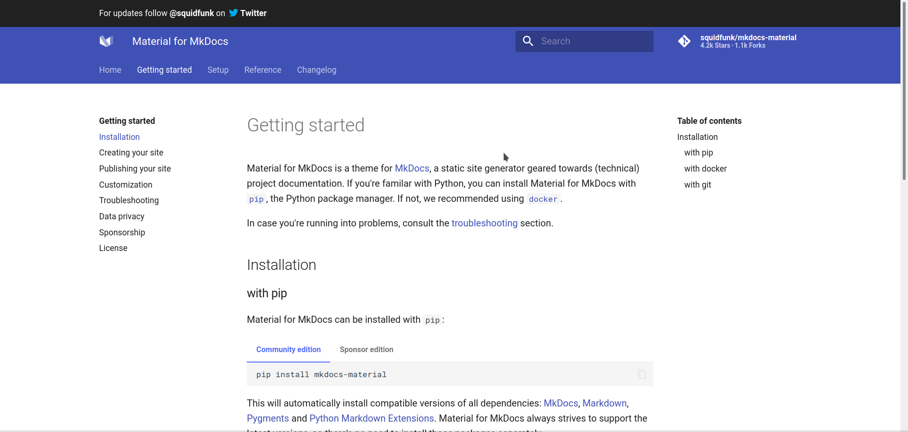
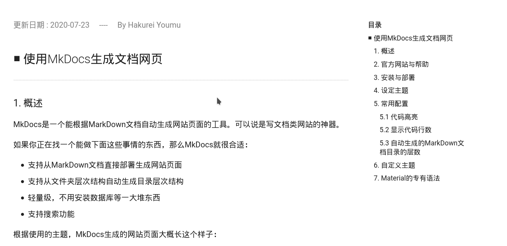

9.4 使用MkDocs生成文档网页
更新日期：2020-07-23
1. 概述
MkDocs是一个能根据MarkDown文档自动生成网站页面的工具。可以说是写文档类网站的神器。
如果你正在找一个能做下面这些事情的东西，那么MkDocs就很合适：
- 支持从MarkDown文档直接部署生成网站页面
- 支持从文件夹层次结构自动生成目录层次结构
- 轻量级，不用安装数据库等一大堆东西
- 支持搜索功能
根据使用的主题，MkDocs生成的网站页面大概长这个样子：


可以看到，页面比较简洁。有基本的导航和搜索功能，并没有类似博客网站那种登录和评论之类的功能。
2. 官方网站与帮助
要查找如何安装使用MkDocs，或者想了解更为复杂的一些用法。最好的办法就是去MkDocs的官方网站，虽然有一个翻译过的中文官方网站，但是里面有些错误，并且版本也不是最新。建议去看原版的英文官方网站。
同时不同的主题也有自己的官方网站，里面会介绍自己对MkDocs的一些扩展方案。
比如material主题的官方网站： https://squidfunk.github.io/mkdocs-material/
3. 安装与部署
请完全安装英文官方网站手册下面的步骤进行安装和部署。只说一些需要注意的地方。
- 最好是按手册上说的使用pip进行安装，而不要使用系统自己的包管理器来安装
- 最后可以不build来生成html页面，如果你不需要的话
那么安装后的东西被放在哪里呢？
在Arch下，默认是放在Python的目录下面的。
1 | |
4. 设定主题
跟着官方手册一步一步来是最好的做法。
这里我选择了material这个主题。安装后也可以从上面提到的Python目录下面找到这个主题的所有文件。
5. 常用配置
在配置文件mkdocs.yml中，可以进行各种设定。包括主题、插件等。
下面的所有配置都是在这个文件中进行修改。并且我们使用Pymdownx这个版本的MarkDown。
5.1 代码高亮
这当然是必备的功能了。
1 2 | |
5.2 显示代码行数
1 2 3 | |
在MarkDown文件中，像通常那样书写代码块就行：
Example
代码：
1 2 3 4 5 6 | |
效果如下：
1 2 3 4 | |
5.3 自动生成的MarkDown文档目录的层数
1 2 3 | |
这里配置为两层。生成的目录如下图所示(右侧的目录)：（如果有5.1.1、5.1.2等章节则不会显示在目录中）

5.4 中文界面与中文搜索
1 2 | |
5.5 绘制图形
需要先使用包管理器安装graphviz：
1 | |
然后去github上安装这个插件：
- sprin / markdown-inline-graphviz
按照上面的说明进行操作即可。
Bug
该项目文档中的插件名是错的，正确的写法是：
1 2 | |
用法，就参考文档上的例子，这里就直接搬运过来：
例子
代码：
1 2 3 4 5 6 7 8 | |
效果：
{% dot attack_plan.svg digraph G { rankdir=LR Earth [peripheries=2] Mars Earth -> Mars } %}
6. Material的专有语法
感觉比较好用的是各种提醒框。语法都是类似的。其实下面的example就已经在使用这种提醒框了。
以note为例：
Example
代码：
1 2 | |
效果如下：
note的标题
这个一个note。
并且提醒框是可以折叠的：
Example
代码：
1 2 | |
效果如下：
折叠note的标题
这个一个note。
所有的提醒框有：
- note, seealso
- abstract, summary, tldr
- info, todo
- tip, hint, important
- success, check, done
- question, help, faq
- warning, caution, attention
- failure, fail, missing
- danger, error
- bug
- example
- quote, cite
看下所有这些效果吧，是不是感觉还挺好看的：
Seealso
这是一个提醒框。
Summary
这是一个提醒框。
Todo
这是一个提醒框。
Tip
这是一个提醒框。
Success
这是一个提醒框。
Question
这是一个提醒框。
Warning
这是一个提醒框。
Failure
这是一个提醒框。
Danger
这是一个提醒框。
Bug
这是一个提醒框。
Quote
这是一个提醒框。